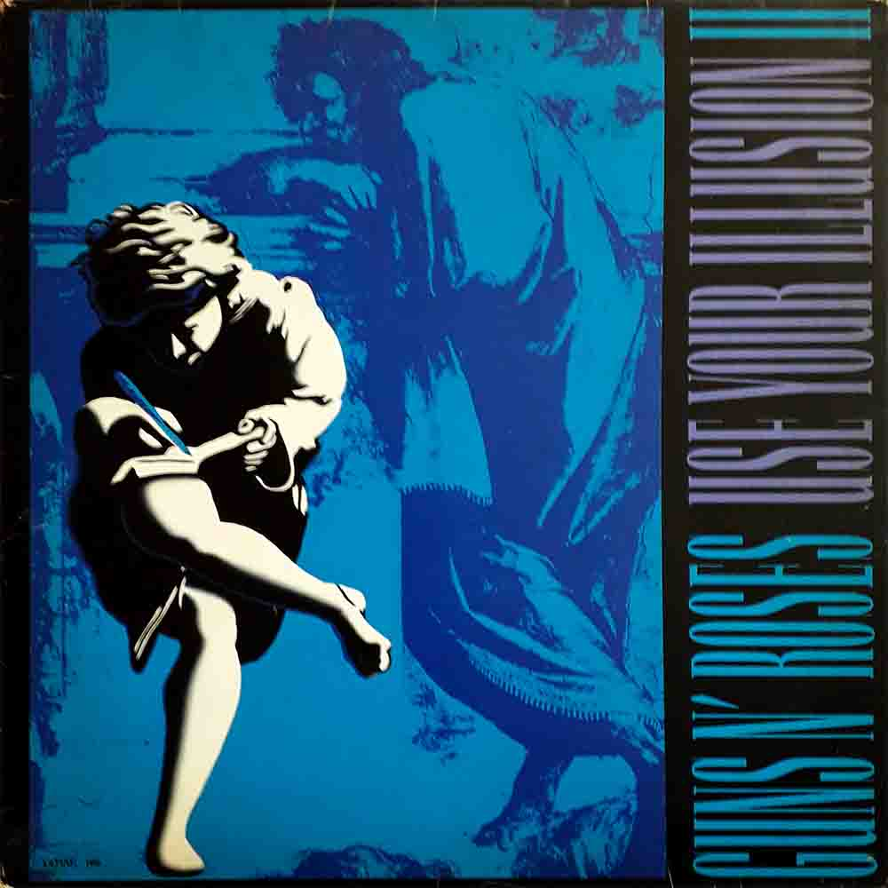
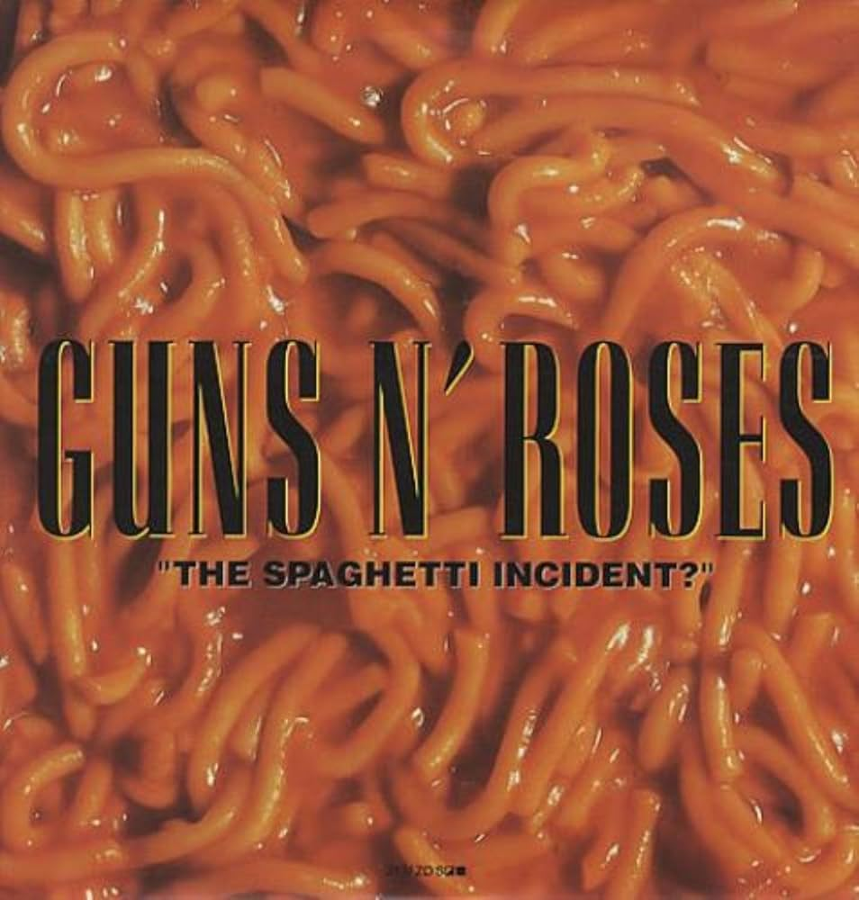
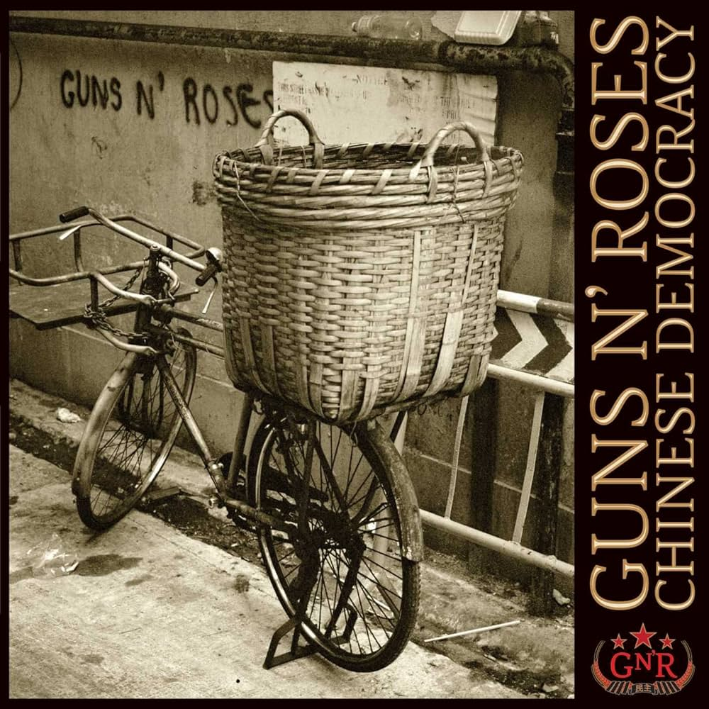

Appetite for Destruction é o álbum de estreia da banda norte-americana de hard rock Guns N' Roses. Lançado em 21 de julho de 1987 pela Geffen Records, não obteve muito sucesso de início, mas começou a vender assim que a banda iniciou turnês pela América do Norte como abertura para grandes nomes do rock como The Cult, Alice Cooper e Aerosmith, além de seus próprios shows por festivais e casas de show.

GN'R Lies, também conhecido como Lies, é o segundo álbum de estúdio da banda de hard rock Guns N' Roses. A capa simula uma primeira página de jornal, com algumas músicas como notícias. Lançado em 1988, Lies, seguiu as altas estatísticas de Appetite for Destruction. Alcançou a 2ª posição nas paradas, foi cinco vezes platina e foi eleito pelo Grammy como "melhor performance de hard rock", chegando ao ouro com a balada "Patience".
Use Your Illusion I é o terceiro álbum de estúdio da banda norte-americana de hard rock Guns N' Roses. Este foi um dos dois álbuns lançados em conjunto com a turnê Use Your Illusion, sendo o outro álbum intitulado Use Your Illusion II, de modo que eles são tidos como um único álbum duplo. Com este lançamento, o Guns N' Roses virou uma das maiores bandas dos anos 90.
Use Your Illusion II é o quarto álbum de estúdio da banda americana de hard rock Guns N' Roses, lançado em 17 de setembro de 1991, simultaneamente com Use Your Illusion I. Use Your Illusion II é o mais popular dos dois lançamentos.
"The Spaghetti Incident?" é o quinto álbum de estúdio gravado pela banda de rock estadunidense Guns N' Roses. Marca também o fim da era clássica da banda. O disco consiste de covers de músicas punk e rock dos anos 70 e 80.
Chinese Democracy é o sexto álbum de estúdio da banda norte-americana Guns N' Roses, lançado mundialmente em novembro de 2008 após ficar conhecido como o "disco eternamente adiado", pois a banda começara a trabalhar nele em 1996 e cancelou todas as datas de lançamento previstas desde o ano até a distribuição. Este é o seu primeiro álbum de estúdio desde The Spaghetti Incident? de 1993, e o primeiro a apresentar apenas material original desde Use Your Illusion II de 1991.
